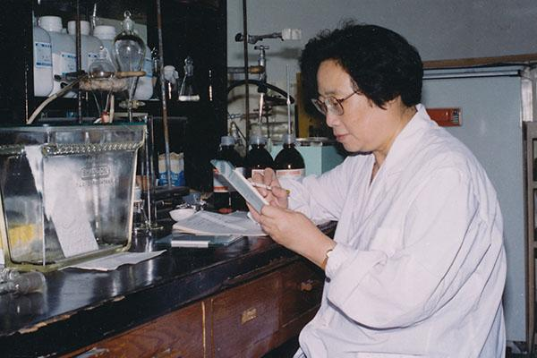
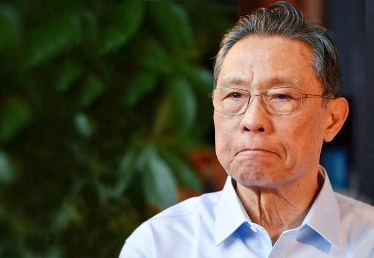

(tip：点击名字可查看更多信息)
-
中国共产主义运动先驱 —— 李大钊
（1889年10月29日-1927年4月28日）
李大钊是我国最早的马克思主义传播者。1919年五四运动后，他更加致力于马克思主义的宣传，在新青年上发表《新青年》上发表《我的马克思主义观》，系统介绍马克思主义理论。他是中国共产党的主要创始人之一。
-
中国共产党创始人之一 —— 何叔衡
（1876年-1935年2月24日）
1935年2月24日，在从江西转移福建的途中，何叔衡在长汀突围战斗中壮烈牺牲，时年59岁，他用生命践行了“我要为苏维埃流尽最后一滴血”的铮铮誓言。
-
中国共产党创始人之一 —— 王尽美
（1898年-1925年8月19日）
王尽美原名王瑞俊，山东人，是山东党组织早期组织者和领导者，1921年7月，出席中国共产党第一次全国代表大会。1925年8月19日，病逝于青岛，时年27岁。
-
中国共产党创始人之一 —— 邓恩铭
（1901年1月-1931年4月5日）
1928年春，邓恩铭任中共青岛市委书记。后由于叛徒告密，在济南被捕。1931年4月5日，在济南市纬八路候家大院刑场，邓恩铭身负镣铐，高唱《国际歌》从容就义，年仅30岁。
-
中国共产党创始人之一 —— —陈谭秋
（1896年-1943年9月27日）
陈谭秋生于1864年。1920年秋，陈谭秋与董必武等发起建立武汉的中国共产党早期组织，是中国共产到最早的党员之一，1921年7月，陈谭秋出席了中国共产党第一次全国代表大会。
-
中国共产党早期领导人之一 —— 陈延年
（1898年—1927年7月4日）
陈延年，安徽怀宁人，生于1898年，陈独秀长子。曾被任命为中共广东区委书记。在不到两年的时间里，广东地区的党员从几百人猛增到5000多人，占当时全国党员总数的1/3左右。
-
提出“中国共产党”名称第一人 —— 蔡和森
（1895年3月30日—1931年8月4日）
1919年12月，蔡和森赴法国勤工俭学，他与陈独秀和毛泽东通信探讨建立共产党的问题，对党的性质，指导思想等问题提出了正确的主张，成为提出“中国共产党”名称的第一人。
-
早期青年运动领导人之一 —— 挥代英
（1895年8月12日-1931年4月29日）
周恩来对挥代英高度评价：“他的无产阶级意识，工作热情，坚强意志，朴素作风，牺牲精神，群众化的品质，感人的说服力，应永远成为中国革命青年的楷模。
-
“龙潭三杰”之一 —— 钱壮飞
（1896年9月25日—1935年4月1日）
1930年冬到1931年2月，钱壮飞将国民党蒋介石对革命根据地发动的第一二次围剿的命令以及兵力部署等重要情报，经李克农等报告党中央，对红军正确决策，打破敌人围剿起了重要作用。
-
中华人民共和国开国元勋 —— 毛泽东
（1893年12月26日-1976年9月9日）
1949年至1976年，毛泽东担任中国人民共和国最高领导人。他对马克思列宁主义的发展，军事理论的贡献以及对共产党的理论贡献被称为毛泽东思想，被人们尊称为“毛主席”。
-
中华人民共和国开国元勋 —— 周恩来
（1898年3月5日-1976年1月8日）
1921年加入中国共产党，是伟大的马克思主义者，伟大的无产阶级革命家，党和国家主要领导人之一。由于他一罐勤奋工作，严于律己，关心群众，被尊称为“人民的好总理”。
-
中华人民共和国开国元勋 —— 刘少奇
（1898年11月24日-1969年11月12日）
刘少奇同志为党和人民的事业奋斗了一生，在新民主主义革命，社会主义革命和社会主义建设的各个历史时期都做出了重大贡献，为党和人民建立了丰功伟绩，收到全党全军全国各族人民的衷心爱戴。
-
中华人民共和国开国元勋 —— 任弼时
（1904年4月30日—1950年10月27日）
他是伟大的马克思主义者，杰出的无产阶级革命家、政治家、组织家，中国共产党和中国人民解放军的卓越领导人，是以毛泽东同志为核心的中国共产党第一代中央领导集体的重要成员。
-
中华人民共和国开国元勋 —— 陈云
（1905年6月13日-1995年4月10日）
陈云为我国社会主义制度的建立和巩固，为我国改革开放和社会主义现代化事业的开创和发展，奉献了毕生精力，建立了不朽功勋，在国内外享有崇高威望，深受全党全军全国各族人民尊敬和爱戴。
-
中华人民共和国开国元勋 —— 邓小平
（1904年8月22日-1997年2月19日）
邓小平是全党全军全国各族人民公认的享有崇高威望的卓越领导人，他所倡导的“改革开放”及“一国两制”政策理念，改变了20世纪后期的中国，也影响了世界，曾两次当选《时代周刊》“年度风云人物”。
-

开国元勋之十大元帅之一 —— 朱德
（1886年12月1日-1976年7月6日）
建国初期，兼任中共中央纪律检查委员会书记，为加强执政党的建设，克服党内各种不良倾向，保持党的优良作风，进行了大量卓有成效的工作。他还多次出国访问、会见外国领导人，增进了中国人民和各国人民的友谊。
-
开国元勋之十大元帅之一 —— 彭德怀
（1898年10月24日-1974年11月29日）
彭德怀于1928年加入中国共产党，第二次国内革命战争时期担任中国工农红军师长、军长、三军团总指挥，中共中央军事委员会副主席；长征后期担任过陕甘支队司令员。抗日战争时期，担任八路军副总司令，中共中央北方局代理书记。
-
开国元勋之十大元帅之一 —— 聂荣臻
（1899年12月29日～1992年5月14日）
聂荣臻同志是久经考验的无产阶级革命家、军事家，党和国家的卓越领导人，中国人民解放军的创建人之一，中华人民共和国元帅，中华人民共和国开国元勋，深受全党、全军、全国人民的尊敬和爱戴。
-
开国元勋之十大元帅之一 —— 刘伯承
（1892年12月4日～1986年10月7日）
刘伯承为中华民族和中国人民的解放事业建立了不朽功勋，为我国的国防建设和社会主义建设事业作出了杰出贡献，对我军向正规化、现代化迈进作出了卓越的贡献。
-
开国元勋之十大元帅之一 —— 贺龙
（1896年3月22日-1969年6月9日）
中国人民解放军的创始人和主要领导者之一。 他在半个多世纪的革命斗争生涯中，为中国的旧民主主义革命、新民主主义革命、社会主义革命和建设，作出了重要贡献，建立了不朽功勋。
-
中华人民共和国主席 —— 习近平
现任中国共产党中央委员会总书记，中共中央军事委员会主席，中华人民共和国主席，中华人民共和国中央军事委员会主席。
-
中国“氢弹之父” —— 于敏
（1926年8月16日—2019年1月16日）
在中国氢弹原理突破中解决了一系列基础问题，提出了从原理到构形基本完整的设想，起了关键作用。对中国核武器进一步发展到国际先进水平作出了重要贡献。
-

中国科学院院士 —— 邓稼先
（1924年6月25日—1986年7月29日）
邓稼先是中国核武器研制与发展的主要组织者、领导者，他始终在中国武器制造的第一线，领导了许多学者和技术人员，成功地设计了中国原子弹和氢弹，把中国国防自卫武器引领到了世界先进水平。
-
“航天之父，导弹之父” —— 钱学森
（1911年12月11日－2009年10月31日）
世界著名科学家，中国载人航天奠基人，中国两弹一星功勋奖章获得者，被誉为“中国航天之父”“中国导弹之父”“中国自动化控制之父”，由于钱学森回国效力，中国导弹、原子弹的发射向前推进了至少20年。
-
中国科学院院士，数学家 —— 华罗庚
（1910年11月12日—1985年6月12日）
华罗庚主要从事解析数论、矩阵几何学、典型群、自守函数论、多复变函数论、偏微分方程、高维数值积分等领域的研究；国际上以华氏命名的数学科研成果有“华氏定理”、“华氏不等式”、“华—王方法”等。
-
著名艺术家，空政文工团创作员 —— 阎肃
（1930年5月9日～2016年2月12日）
歌剧《江姐》是阎肃的成名作， 这部歌剧在1964年公演，立即引起轰动，阎肃也因此受到毛泽东的接见。他还多次参加中央电视台春节联欢晚会、总政双拥晚会、文化部春节晚会等大型晚会的总体设计、策划、撰稿。
-

中国首位诺贝尔医学奖获得者 —— 屠呦呦
2011年9月，因发现青蒿素——一种用于治疗疟疾的药物，挽救了全球特别是发展中国家数百万人的生命获得拉斯克奖和葛兰素史克中国研发中心“生命科学杰出成就奖” 。2015年10月获得诺贝尔生理学或医学奖。
-

中国工程院院士 —— 钟南山
中国抗击非典型肺炎的领军人物，著名呼吸病学专家，长期致力于重大呼吸道传染病及慢性呼吸系统疾病的研究、预防与治疗，成果丰硕，实绩突出。
-
中国工程院院士 —— 李兰娟
中国人工肝开拓者、国家传染病重点学科带头人，主要从事传染病临床、科研和教学工作，擅长各类肝炎、感染性疾病、新发突发传染病诊治。
-
全国脱贫攻坚楷模 —— 张桂梅
1998年4月加入中国共产党，丽江华坪女子高级中学书记、校长，华坪县儿童福利院院长。2021年2月25日，荣获“全国脱贫攻坚楷模”荣誉称号。
-

全国脱贫攻坚楷模——黄文秀
（1989年4月18日—2019年6月17日）
2018年3月26日，黄文秀来到广西壮族自治区百色市乐业县新化镇百坭村担任驻村第一书记。2019年6月17日凌晨，黄文秀从百色返回乐业途中遭遇山洪因公殉职，年仅30岁。
-
全国脱贫攻坚楷模——毛相林
1997年，担任老下庄村支书的毛相林带领村民向绝壁挑战，历经7年时间在悬崖绝壁上凿出一条“天路”。2021年2月25日，毛相林被授予“全国脱贫攻坚楷模”荣誉称号。
-
全国脱贫攻坚楷模 —— 夏森
夏森同志14岁开始投身革命，15岁加入中国共产党，多年来，她一直过着艰苦朴素的生活。她离休后仍心系贫困地区教育事业，累计捐出自己靠省吃俭用积攒下来的203.2万元。